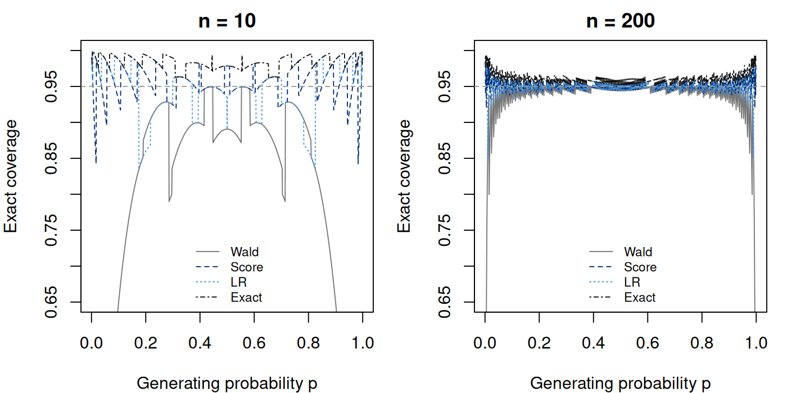

Notes on Statistical Inference
Chapter 6. Likelihood asymptotics and confidence sets
An estimate of means little without the experiment that produced it. Two events among ten people and forty events among two hundred people yield the same proportion, but their sampling uncertainty is different. Chapter 5 explained concentration and scaled error. We now use those arguments to construct sets of parameter values compatible with a specified procedure, and then ask whether the sets perform as promised when the study is repeated.
The recurring binary model deliberately makes this question computable. We can derive several interval constructions, enumerate all possible counts, and evaluate their coverage under a fixed population probability. We can then distinguish the limiting theorem from its numerical implementation and from the interpretation of an observed interval. We will compare the actual coverage with the claimed coverage rather than infer reliability from the word “confidence.”
Core material includes likelihood curvature, regular likelihood approximations, coverage, score inversion, and exact binomial intervals. Profile likelihood and support-dependent limits are advanced extensions. The binomial example connects those results to the approximations in Chapter 5 and lets us compare their finite-sample behavior directly.
6.1 A confidence set is a rule before it is an interval
Let be a set-valued function of the random data. Its coverage at parameter is (6.1) The parameter is fixed in this probability; the set varies across hypothetical samples. A finite-sample confidence procedure with level satisfies for every allowed . A procedure can have coverage strictly larger than its nominal level, particularly when the sample space is discrete. An asymptotic procedure may instead satisfy for each fixed interior under specified conditions. This pointwise assertion does not supply a uniform guarantee over sequences of parameters approaching a boundary.
Once the observations are realized, is fixed too. The frequentist statement does not assign a probability to the particular fixed parameter lying in this fixed set. The posterior credible set in Bayesian inference (Chapter 8) uses a different probability, conditional on the observed data and a prior. Neither vocabulary should be substituted for the other. Both can be valuable, but their construction and evaluation answer different questions.
Coverage alone is also an incomplete quality criterion. The entire parameter space has coverage one and provides little information. Useful evaluation includes width, shape, parameter constraints, and the scientific consequences of excluded values. A narrow interval that undercovers can be misleading; a conservative interval may be reliable but inefficient. A choice among them must specify what reliability and informativeness mean in the intended application.
For a fixed , binomial coverage is exactly (6.2) This finite sum is not a simulation. It evaluates the complete procedure, including how endpoints change with the count. Plugging the observed into one formula cannot establish coverage; it describes only one possible interval.
6.2 From the score to a regular maximum-likelihood limit
To choose interval endpoints, we need the estimator’s sampling behavior. The preceding chapter gave a normal limit for the sample proportion directly. We now derive a corresponding limit from a regular likelihood, making explicit the conditions that let curvature measure precision. Let be independent and identically distributed with density relative to a common measure, and let for a scalar parameter. Write the score and observed information . The expected information per observation is (6.3) To identify this with minus the expected second derivative, we need parameter-independent support and enough regularity to differentiate the normalized density under the integral. Moving support can invalidate that argument, so we retain those qualifications here.
A sufficient framework for the argument is an identifiable model with locally fixed support, a true parameter interior to an open parameter space, a consistent interior maximum-likelihood estimator, and enough differentiability and integrability for the score to have mean zero and finite positive variance . We also require normalized curvature to converge uniformly in a neighborhood of to a continuous information function. That local uniformity lets us evaluate curvature at a random intermediate value approaching . Consistency is assumed here; the score equation alone does not prove it.
For an interior maximizer, . Taylor expansion at the true value gives, for an intermediate value , (6.4) The score central limit theorem gives a numerator limit . Consistency and the local curvature condition give a denominator limit . Slutsky’s theorem therefore yields (6.5) The variance is per-observation inverse information for the scaled error, or approximately for the unscaled estimator. Confusing these two conventions introduces a factor-of- error.
6.3 Three related ways to measure departure
For a candidate value , likelihood theory supplies three regular, first-order measures of discrepancy: (6.6, 6.7, 6.8) The Wald measure uses the estimate and its estimated precision. The score measure asks whether the slope at the candidate value is unusually large under that candidate. The likelihood-ratio measure compares the candidate’s likelihood with the best fit. Each involves the same observations, but they use different finite-sample features of the likelihood.
Under the regular conditions above, when , all three converge in distribution to . For the likelihood ratio, expand about the interior maximizer. The linear term vanishes, giving plus a negligible remainder when a more general Taylor form is needed. Normalized curvature tends to , and equation (6.5) makes the product approach the square of a standard normal variable. This is the scalar regular form of Wilks’s approximation.
The equality of limits does not establish equality of finite-sample procedures. It also does not establish invariance of Wald intervals: a normal interval constructed on one parameter scale can differ from transforming an interval constructed on another scale. The likelihood ratio itself is unchanged under a one-to-one reparameterization because the likelihood maxima refer to the same distributions. Its numerical interval still depends on a critical-value approximation and the specified parameter domain.
6.4 The binary model makes the curvature explicit
For , ignoring a constant that cancels in likelihood ratios, (6.9) The MLE on is . At or it is a boundary maximizer, not an interior score root. For a fixed interior generating , those boundary samples become improbable with increasing , but their finite-sample intervals still require deliberate definitions.
Let , the standard-normal quantile. Direct use of equation (6.5) produces the Wald interval (6.10) At , this 95% interval is approximately . The negative endpoint is outside the parameter space. Clipping it to zero makes the display admissible but does not improve coverage for a true : intersecting a set with the parameter space cannot change whether an allowed parameter belongs to it.
A more serious problem occurs at . Equation (6.10) gives , asserting no uncertainty despite an event probability that may be small and positive. At it similarly gives . These failures are features of this plug-in construction. They are not evidence that no frequentist uncertainty set can be useful for boundary samples.
6.5 Invert the score and obtain a Wilson interval
A candidate passes the two-sided score criterion when (6.11) Moving the denominator to the other side and collecting powers of gives (6.12) The two roots delimit the Wilson score interval: (6.13) Here the denominator under the candidate criterion uses , not . That change is exactly what must be preserved during inversion. The resulting endpoints lie in , and at the upper endpoint is . We include the appropriate endpoint 0 or 1 by continuity.
At , the interval is approximately . It is asymmetric around because the candidate variance changes with the candidate probability. This asymmetry reflects the procedure’s algebra rather than a cosmetic correction. The score interval often improves on the Wald interval, but its use of a normal critical value still gives approximate rather than guaranteed finite-sample coverage.
The R counterpart evaluates the same center and half-width for all possible counts. The explicit endpoint assignments implement the parameter-domain convention after the algebra, and guard against tiny floating-point discrepancies at zero and one.
Run the complete R example
Dependencies: base R. This complete block includes the data, setup and calculations. Run it in a fresh R session. Short code excerpts above explain individual steps; this block supplies their shared setup. Figures and tables are written to a temporary directory.
Complete R example
# Complete R example. Synthetic data; no external files are required.
local({
previous.directory <- getwd()
example.directory <- tempfile("biomedical-example-")
dir.create(example.directory)
setwd(example.directory)
on.exit(setwd(previous.directory))
dir.create("generated",showWarnings=FALSE)
# interval construction and exact repeated-sampling coverage.
out <- "generated"; out.dir <- out
dir.create(out,recursive=TRUE,showWarnings=FALSE)
alpha <- .05
z <- qnorm(1-alpha/2)
critical <- qchisq(1-alpha,1)
intervals <- function(n) {
k <- 0:n; q <- k/n
se <- sqrt(q*(1-q)/n)
wald.l <- q-z*se; wald.u <- q+z*se
center <- (q+z^2/(2*n))/(1+z^2/n)
half <- z*sqrt(q*(1-q)/n+z^2/(4*n^2))/(1+z^2/n)
score.l <- center-half; score.u <- center+half
score.l[1] <- 0; score.u[n+1] <- 1
ll <- function(p,k) dbinom(k,n,p,log=TRUE)
lr <- t(vapply(k,function(kk) {
qq <- kk/n
if(kk==0L) return(c(0,1-exp(-critical/(2*n))))
if(kk==n) return(c(exp(-critical/(2*n)),1))
objective <- function(p) 2*(ll(qq,kk)-ll(p,kk))-critical
c(uniroot(objective,c(1e-14,qq),tol=1e-12)$root,
uniroot(objective,c(qq,1-1e-14),tol=1e-12)$root)
},numeric(2)))
exact.l <- ifelse(k==0,0,qbeta(alpha/2,k,n-k+1))
exact.u <- ifelse(k==n,1,qbeta(1-alpha/2,k+1,n-k))
data.frame(n=n,k=k,estimate=q,wald.l=wald.l,wald.u=wald.u,
score.l=score.l,score.u=score.u,lr.l=lr[,1],lr.u=lr[,2],
exact.l=exact.l,exact.u=exact.u)
}
coverage <- function(tab,p,method) {
lo <- tab[[paste0(method,".l")]]; hi <- tab[[paste0(method,".u")]]
sum(dbinom(tab$k,tab$n[1],p)*(lo<=p & p<=hi))
}
methods <- c("wald","score","lr","exact")
all.intervals <- do.call(rbind,lapply(c(10L,50L,200L),intervals))
write.csv(all.intervals,file.path(out,"ch08-intervals.csv"),row.names=FALSE)
observed <- intervals(10L)[3,]
write.csv(observed,file.path(out,"ch08-observed.csv"),row.names=FALSE)
settings <- expand.grid(n=c(10L,50L,200L),p=c(.01,.15,.5))
checked <- do.call(rbind,lapply(seq_len(nrow(settings)),function(i) {
n <- settings$n[i]; p <- settings$p[i]; tab <- intervals(n)
data.frame(n=n,p=p,t(vapply(methods,function(m) coverage(tab,p,m),numeric(1))))
}))
write.csv(checked,file.path(out,"ch08-selected-coverage.csv"),row.names=FALSE)
reader <- do.call(rbind,lapply(c(10L,50L,200L),function(n) {
tab <- intervals(n); p <- seq(.001,.999,by=.001)
data.frame(n=n,p=p,t(vapply(p,function(pp)
vapply(methods,function(m) coverage(tab,pp,m),numeric(1)),numeric(4))))
}))
write.csv(reader,file.path(out,"ch08-reader-coverage.csv"),row.names=FALSE)
stopifnot(all(reader$exact>=1-alpha-1e-12))
stopifnot(all(all.intervals$score.l>=-1e-12),all(all.intervals$score.u<=1+1e-12))
stopifnot(all(all.intervals$lr.l>=0),all(all.intervals$lr.u<=1))
stopifnot(abs(observed$score.l-.05668215)<1e-7)
stopifnot(all(vapply(methods,function(m)
coverage(intervals(10L),0,m)==1 && coverage(intervals(10L),1,m)==1,logical(1))))
# Direct likelihood-ratio checks at computed interior endpoints.
for(n in c(10L,50L,200L)) {
tab <- intervals(n)
for(j in 2:n) {
kk <- tab$k[j]; qq <- kk/n
rr <- 2*(dbinom(kk,n,qq,log=TRUE)-dbinom(kk,n,c(tab$lr.l[j],tab$lr.u[j]),log=TRUE))
stopifnot(max(abs(rr-critical))<1e-6)
}
}
set.seed(602808)
b <- 100000L
mc <- do.call(rbind,lapply(c(10L,50L,200L),function(n) {
tab <- intervals(n); p <- .15; counts <- rbinom(b,n,p)
data.frame(n=n,method=methods,exact=vapply(methods,function(m) coverage(tab,p,m),numeric(1)),
simulated=vapply(methods,function(m) mean(tab[[paste0(m,".l")]][counts+1]<=p &
p<=tab[[paste0(m,".u")]][counts+1]),numeric(1)))
}))
mc$mcse <- sqrt(mc$simulated*(1-mc$simulated)/b)
write.csv(mc,file.path(out,"ch08-simulation.csv"),row.names=FALSE)
# Expected widths evaluate informativeness under the same sampling law.
widths <- do.call(rbind,lapply(c(10L,50L,200L),function(n) {
tab <- intervals(n); p <- .15
data.frame(n=n,method=methods,expected.width=vapply(methods,function(m) {
# Raw Wald endpoints are clipped only for this parameter-space width.
lo <- pmax(0,tab[[paste0(m,".l")]])
hi <- pmin(1,tab[[paste0(m,".u")]])
sum(dbinom(tab$k,n,p)*(hi-lo))
},numeric(1)))
}))
write.csv(widths,file.path(out,"ch08-widths.csv"),row.names=FALSE)
tex.observed <- data.frame(method=c("Wald","Score (Wilson)","Likelihood ratio","Equal-tailed exact"),
lower=as.numeric(unlist(observed[c("wald.l","score.l","lr.l","exact.l")])),
upper=as.numeric(unlist(observed[c("wald.u","score.u","lr.u","exact.u")])))
lines <- c("\\begin{tabular}{lrr}\\toprule","Method & Lower & Upper \\\\ \\midrule")
for(i in 1:4) lines <- c(lines,paste0(tex.observed$method[i]," & ",
sprintf("%.6f",tex.observed$lower[i])," & ",sprintf("%.6f",tex.observed$upper[i])," \\\\"))
writeLines(c(lines,"\\bottomrule\\end{tabular}"),file.path(out,"ch08-observed.tex"))
lines <- c("\\begin{tabular}{rrrrrr}\\toprule","$n$ & $p$ & Wald & Score & LR & Exact \\\\ \\midrule")
for(i in seq_len(nrow(checked))) lines <- c(lines,paste0(paste(formatC(as.numeric(unlist(checked[i,])),format="f",digits=4),collapse=" & ")," \\\\"))
writeLines(c(lines,"\\bottomrule\\end{tabular}"),file.path(out,"ch08-selected-coverage.tex"))
plot.coverage <- function() {
par(mfrow=c(1,2),mar=c(4,4,2,1))
for(n in c(10L,200L)) {
dat <- reader[reader$n==n,]
matplot(dat$p,dat[,methods],type="l",lty=c(1,2,3,4),
col=c("#777777","#002D72","#418FDE","#111111"),ylim=c(.65,1),
xlab="Generating probability p",ylab="Exact coverage",main=paste("n =",n))
abline(h=.95,col="grey60",lty=2)
legend("bottom",c("Wald","Score","LR","Exact"),col=c("#777777","#002D72","#418FDE","#111111"),
lty=c(1,2,3,4),bty="n",cex=.75)
}
}
cairo_pdf(file.path(out,"ch08-coverage.pdf"),width=7,height=3.5);plot.coverage();dev.off()
png(file.path(out,"ch08-coverage.png"),width=1400,height=700,res=180);plot.coverage();dev.off()
capture.output(sessionInfo(),file=file.path(out,"ch08-session-info.txt"))
print(tex.observed);print(checked);print(mc)
# Mean-difference precision with an estimated versus known baseline mean.
sigma2 <- 4; n.pair <- 20
I.pair <- matrix(c(1,1,1,2),2,2)/sigma2
I.effective <- I.pair[1,1]-I.pair[1,2]^2/I.pair[2,2]
nuisance.example <- data.frame(n=n.pair,sigma2=sigma2,
information=I.effective,variance.profile=1/(n.pair*I.effective),
variance.joint=solve(I.pair)[1,1]/n.pair,variance.known=sigma2/n.pair)
stopifnot(abs(nuisance.example$variance.profile-.4)<1e-12,
abs(nuisance.example$variance.joint-.4)<1e-12,
abs(nuisance.example$variance.known-.2)<1e-12)
write.csv(nuisance.example,file.path(out,"ch08-nuisance-example.csv"),row.names=FALSE)
print(nuisance.example)
# Computational counterparts: the same fixed binomial experiment.
# From first principles: tail inversion through beta quantiles.
k.obs <- 2L; n.obs <- 10L; alpha.obs <- .05
cp.direct <- c(qbeta(alpha.obs/2, k.obs, n.obs-k.obs+1),
qbeta(1-alpha.obs/2, k.obs+1, n.obs-k.obs))
# Standard R workflow: make the interval and correction choices explicit.
cp.fit <- stats::binom.test(k.obs, n.obs, alternative="two.sided",
conf.level=1-alpha.obs)
score.fit <- suppressWarnings(stats::prop.test(k.obs, n.obs,
alternative="two.sided", conf.level=1-alpha.obs, correct=FALSE))
corrected.fit <- suppressWarnings(stats::prop.test(k.obs, n.obs,
alternative="two.sided", conf.level=1-alpha.obs, correct=TRUE))
c(lower=cp.fit$conf.int[1], upper=cp.fit$conf.int[2])
c(lower=score.fit$conf.int[1], upper=score.fit$conf.int[2])
workflow.ci <- data.frame(
procedure=c("Equal-tailed exact", "Score: no continuity correction",
"Score: continuity correction"),
lower=c(cp.fit$conf.int[1], score.fit$conf.int[1], corrected.fit$conf.int[1]),
upper=c(cp.fit$conf.int[2], score.fit$conf.int[2], corrected.fit$conf.int[2]))
stopifnot(abs(pbinom(k.obs-1,n.obs,cp.direct[1],lower.tail=FALSE)-alpha.obs/2)<1e-12,
abs(pbinom(k.obs,n.obs,cp.direct[2])-alpha.obs/2)<1e-12,
max(abs(cp.direct-as.numeric(cp.fit$conf.int)))<1e-12,
max(abs(c(observed$score.l,observed$score.u)-
as.numeric(score.fit$conf.int)))<1e-12)
# Audit endpoint conventions and equivalence for every observed count.
for(nn in c(1L,10L,50L)) {
direct <- intervals(nn)
for(kk in 0:nn) {
cp <- stats::binom.test(kk,nn,conf.level=1-alpha)$conf.int
score <- suppressWarnings(stats::prop.test(kk,nn,
conf.level=1-alpha,correct=FALSE))$conf.int
stopifnot(max(abs(as.numeric(cp)-c(direct$exact.l[kk+1],
direct$exact.u[kk+1])))<1e-12,
max(abs(as.numeric(score)-c(direct$score.l[kk+1],
direct$score.u[kk+1])))<1e-10)
}
}
write.csv(workflow.ci,file.path(out,"ch08-r-workflow.csv"),row.names=FALSE)
capture.output(print(workflow.ci,digits=8),
file=file.path(out,"ch08-r-workflow-output.txt"))
print(workflow.ci,digits=8)
cat("\nSelected numerical results\n")
for (candidate in c("reader", "summary", "summary.mc", "perf", "comparison", "route.comparison", "test", "tab", "exact", "workflow.ci", "coef.tab", "evaluation.table")) {
if (exists(candidate, inherits=FALSE)) {
value <- get(candidate, inherits=FALSE)
if (is.data.frame(value) || is.matrix(value)) { cat(candidate, "\n"); print(utils::head(value,8)) }
}
}
cat("R", as.character(getRversion()), "\n")
})
This excerpt shows a step inside the preceding complete R example; it uses that block’s data and setup.
k <- 0:n; q <- k/n
se <- sqrt(q*(1-q)/n)
wald.l <- q-z*se; wald.u <- q+z*se
center <- (q+z^2/(2*n))/(1+z^2/n)
half <- z*sqrt(q*(1-q)/n+z^2/(4*n^2))/(1+z^2/n)
score.l <- center-half; score.u <- center+half
score.l[1] <- 0; score.u[n+1] <- 1The likelihood-ratio set is (6.14) For an interior count, the script solves one endpoint on each side of . At , , so the upper endpoint is . Thus it too remains nondegenerate after observing no events. A meaningful likelihood at a boundary does not make the chi-square calibration exact there.
6.6 An exact finite-sample construction
The score and likelihood-ratio intervals use limiting reference distributions even when we solve their endpoint equations exactly. For the binomial model, we can instead calibrate the procedure with the finite sampling law. Inverting two one-sided tests at level gives an equal-tailed interval. For , its lower and upper endpoints solve (6.15) At take ; at take . Binomial-tail/beta-distribution identities yield the convenient implementation (6.16) with the stated endpoint exceptions. These are the equal-tailed Clopper–Pearson bounds. The beta quantiles arise from tail inversion, not from quietly introducing a prior.
From first principles
The equations specify a short calculation for the same observed count out of . Evaluate the two beta quantiles separately; their different shape parameters implement the two tail equations, not a posterior distribution:
This excerpt shows a step inside the preceding complete R example; it uses that block’s data and setup.
k.obs <- 2L; n.obs <- 10L; alpha.obs <- .05
cp.direct <- c(qbeta(alpha.obs/2, k.obs, n.obs-k.obs+1),
qbeta(1-alpha.obs/2, k.obs+1, n.obs-k.obs))The result is . Substitution into the binomial tails verifies the endpoint equations before any interval label is attached.
Standard R workflow
stats::binom.test() returns the same equal-tailed exact
interval. For the score interval, stats::prop.test() must
be called with correct=FALSE to match equation (6.13); its default continuity
correction describes a different construction [3], [4]:
This excerpt shows a step inside the preceding complete R example; it uses that block’s data and setup.
cp.fit <- stats::binom.test(k.obs, n.obs, alternative="two.sided",
conf.level=1-alpha.obs)
score.fit <- suppressWarnings(stats::prop.test(k.obs, n.obs,
alternative="two.sided", conf.level=1-alpha.obs, correct=FALSE))
corrected.fit <- suppressWarnings(stats::prop.test(k.obs, n.obs,
alternative="two.sided", conf.level=1-alpha.obs, correct=TRUE))
c(lower=cp.fit$conf.int[1], upper=cp.fit$conf.int[2])
c(lower=score.fit$conf.int[1], upper=score.fit$conf.int[2])The exact endpoints agree with the direct calculation to numerical precision. The uncorrected score endpoints are ; enabling the continuity correction gives . That difference is a change of procedure, not a failed implementation. The complete R example checks exact and uncorrected score bounds for every count at , including zero and all-event samples. The printed confidence level records the chosen rule; it does not diagnose independence, common probability, or complete outcome observation.
Why is coverage at least ? The event that the lower bound exceeds the true corresponds to a count unusually large under that ; by the one-sided test construction, its probability is at most . The event that the upper bound is below has probability at most too. The union bound gives noncoverage at most . Discreteness generally prevents exact equality for every , so “exact” refers to calibration using the finite sampling law, not to a constant coverage of exactly 0.95.
| Method | Lower | Upper |
|---|---|---|
| Wald | -0.047918 | 0.447918 |
| Score (Wilson) | 0.056682 | 0.509838 |
| Likelihood ratio | 0.036363 | 0.499440 |
| Equal-tailed exact | 0.025211 | 0.556095 |
The observed endpoints are four different answers to a procedural question, not four competing truths about the same fixed parameter. They can be compared by exact coverage, expected width, computational behavior, and interpretation. The accepted level alone does not choose among them.
6.7 Execute the procedure over every possible sample
The R function constructs the endpoints for all counts, then equation (6.2) weights their coverage indicators by binomial probabilities. Its likelihood-ratio endpoints are checked by substituting them back into the likelihood equation. Its exact-interval coverage is checked on 999 interior generating probabilities at each of three sample sizes, alongside the theoretical argument above. Grid verification is a numerical audit, not a proof for unexamined parameter values.
This excerpt shows a step inside the preceding complete R example; it uses that block’s data and setup.
coverage <- function(tab,p,method) {
lo <- tab[[paste0(method,".l")]]; hi <- tab[[paste0(method,".u")]]
sum(dbinom(tab$k,tab$n[1],p)*(lo<=p & p<=hi))
}| Wald | Score | LR | Exact | ||
|---|---|---|---|---|---|
| 10.0000 | 0.0100 | 0.0955 | 0.9044 | 0.9957 | 0.9957 |
| 50.0000 | 0.0100 | 0.3948 | 0.9106 | 0.9862 | 0.9862 |
| 200.0000 | 0.0100 | 0.8650 | 0.9483 | 0.8500 | 0.9840 |
| 10.0000 | 0.1500 | 0.7933 | 0.9500 | 0.9901 | 0.9901 |
| 50.0000 | 0.1500 | 0.9408 | 0.9558 | 0.9239 | 0.9726 |
| 200.0000 | 0.1500 | 0.9445 | 0.9410 | 0.9525 | 0.9631 |
| 10.0000 | 0.5000 | 0.8906 | 0.9785 | 0.8906 | 0.9785 |
| 50.0000 | 0.5000 | 0.9351 | 0.9351 | 0.9351 | 0.9672 |
| 200.0000 | 0.5000 | 0.9440 | 0.9440 | 0.9440 | 0.9600 |


The saw-toothed curves are not Monte Carlo noise. As changes, the probability weights change smoothly, but membership of in a particular count’s interval can switch abruptly. The nominal horizontal line is a design target. The exact interval’s curve stays at or above it; the approximate methods need not. Independent simulation of 100,000 counts per selected sample size then checks the enumeration, with a separately reported Monte Carlo standard error.
A reader interaction can change the generating probability and sample size, predict coverage, and then reveal the four exact sums. Its static counterpart is the table and figure. The pedagogical point is that coverage belongs to a rule applied across possible samples. Moving the observed interval alone cannot reveal that property.
6.8 Precision, width, and a planning calculation
Coverage protects a probability statement about the procedure; width describes how much the realized set narrows the possible parameter values. In the finite-binomial experiment the expected parameter-space width is another exact sum: (6.17) The complete R example evaluates this at for the same sample sizes and methods as the coverage table. Intersecting a raw Wald interval with changes this width even though it leaves coverage unchanged. Thus a cosmetic-looking endpoint adjustment can affect one performance criterion and not another. The calculation uses the stated endpoint rule, so the displayed widths compare the specified procedures rather than mix raw and clipped intervals.
A first planning approximation sets a desired half-width and solves , giving . If no defensible planning probability is available, the worst-case variance gives . This is an approximate precision calculation, not a guarantee that every future interval will have that width or attain nominal coverage. The future count is random; exact or likelihood-based endpoints also need not be symmetric.
In a biomedical study, precision can additionally be limited by clustering, outcome ascertainment, incomplete follow-up, or an unrepresentative sampling frame. Increasing the planned number of independent observations reduces sampling variation within the model. It does not reduce a systematic error simply because a standard error becomes small. The survival book’s observation chapter explains why a binary event cannot be treated as fully observed when follow-up is incomplete. The sampling unit and the observation process must be resolved before the planning formula is applied.
The comparison should therefore be reported in two stages: first ask whether coverage is adequate for the intended parameter settings, then compare informativeness among procedures that meet that requirement. Expected width alone could reward a procedure that too often omits the truth. Coverage alone could reward a set so broad that it cannot support any scientific distinction. The statistical target, the reliability requirement, and the desired resolution jointly determine what counts as useful uncertainty quantification.
6.9 Nuisance parameters and changing support: advanced extensions
When contains a target parameter and nuisance parameter , estimate both or profile over for each fixed . With an interior regular model, define the profile log likelihood by . A candidate target is compared with its own best-fitting nuisance value, rather than with a nuisance estimate held fixed from another fit. In a regular model with nonsingular per-observation information partitioned into blocks, the effective information for is (6.18) This is a Schur complement. To see why it appears, write the target and nuisance score vectors for one observation as . The adjusted score has zero covariance with , and its variance is . The inverse of this matrix is the target block of the joint inverse information. Estimating a correlated nuisance direction therefore reduces the information available for the target. A regular profile likelihood ratio for unconstrained target dimensions has a limit; nuisance dimensions are not added to its degrees of freedom.
For a concrete calculation, observe independent pairs with and , with the two coordinates independent and known. The target is a mean difference and is the second population’s mean. One pair has information The joint MLE is , , and . If were truly known, only would be needed and its variance would be . The factor of two is the uncertainty in estimating the baseline mean, not an arbitrary correction. The matrix calculation and direct variance calculation agree:
This excerpt shows a step inside the preceding complete R example; it uses that block’s data and setup.
sigma2 <- 4; n <- 20
I <- matrix(c(1,1,1,2),2,2)/sigma2
effective <- I[1,1]-I[1,2]^2/I[2,2]
1/(n*effective) # 0.4: nuisance mean estimated
solve(I)[1,1]/n # 0.4: joint inverse information
sigma2/n # 0.2: nuisance mean knownAn exact contrast is a normal mean with unknown variance. Orthogonal normal components make independent of the residual sum of squares, with . Consequently has a Student distribution. The familiar interval uses an exact pivot under the normal model. Under a nonnormal independent finite-variance model, a studentized-mean normal limit may still hold, but the exact Student distribution is no longer established by that fact.
Now let observations be uniform on . The sample maximum is the MLE, but the support depends on . Its distribution obeys for . Thus (6.19) has exact coverage . Moreover approaches an exponential distribution with rate one. The relevant scale is , not , and the limit is not normal. This example shows why a theorem’s support and boundary conditions belong in the analysis, rather than in a footnote after applying its formula.
6.10 Interpretation and a transition to testing
Suppose the scientific decision in Chapter 4 uses threshold . The observed confidence set can help communicate which probabilities remain compatible with its procedure. If it spans the threshold, the data do not tightly distinguish the two probability regimes at the chosen level. This does not prove equal action costs, determine the optimal action, or assign a posterior probability to exceeding the threshold. Decision costs, estimation uncertainty, and evidential compatibility are related questions with distinct definitions.
We have to keep the probability statement attached to the procedure. Confidence concerns repeated sets at a fixed parameter; the observed set is fixed after observation. Clipping a Wald interval to the parameter space cannot alter its coverage for an allowed parameter. The likelihood-ratio interval here uses an asymptotic critical value, so its sampling calibration remains approximate even though its construction does not require a prior.
A defensible report names the procedure, sample model, observed endpoints, and interpretation. It states any boundary or sparse-information limitation and, when possible, checks coverage across plausible settings. Chapter 7 will develop the tests whose acceptance regions we have inverted here, including exact error control, power, and the meaning of a realized -value.
Explore: a confidence procedure across repeated samples
Predict first: at a small population event probability, will a nominal 95% Wald interval cover nearly 95% of the time? Every value below is an exact sum over the binomial sample space, not a simulation.
| Procedure | Coverage |
|---|
The horizontal rule marks 0.95. A confidence level describes the random procedure before seeing data. It is not a posterior probability for the realized interval.
Static counterpart: the finite-sum coverage derivation, interval table, and coverage figure in this chapter. The slider evaluates only the displayed grid of probabilities.
6.11 Exercises
Coverage is a property of random sets. Let , , and let be any specified confidence-set procedure. Write its exact coverage as a finite sum. Prove that replacing by leaves coverage unchanged at every allowed . Explain why this can shorten an interval without repairing undercoverage.
Invert the score inequality. For from a binomial model, let and , . Solve for . Give the endpoints at , compare with the Wald endpoints, and identify which step in the score construction uses an approximation.
Exact tail inversion and posterior quantiles. For , derive the closed equal-tailed Clopper–Pearson interval, , using upper and lower binomial tails. State endpoint conventions for , express the interior bounds as beta quantiles, and prove coverage at least for every . Explain why this is not the equal-tailed interval from a uniform-prior posterior.
A support-dependent model needs a different pivot. Let be independent uniform observations, , and . Show that has exact coverage , . Derive the limit of and identify why the ordinary interior-score, square-root- likelihood argument does not apply.